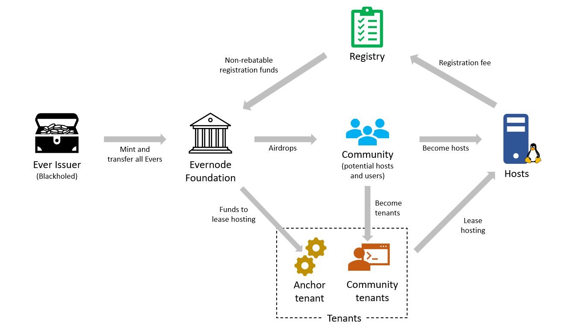

Evernode tokenomics
Evernode uses Evers (EVR) as its native currency for all financial transactions in the marketplace. Evers are tokens issued on the XRP Ledger with a guaranteed finite supply. Evers are minted from a blackholed XRPL account known as Ever issuer which guarantees that no more Evers can be issued after the initial minting. Subsequently, Evers circulated into the market via airdrops and as payments made by Evernode purchaser service. The following diagram shows the flow of Evers within Evernode ecosystem.

- Ever issuer mints and transfers 72,253,440 EVR (72.2m) to Evernode Foundation, after which it is blackholed.
- Evernode Foundation allocates 20,643,840 EVR (20.6m) for airdrops.
- Remaining 51,609,600 EVR (51.6m) are used to progressively purchase hosting from registered hosts as an incentive.
Moment
"Moment" is the measure of time in Evernode. It is calculated using "XRPL ledgers elapsed". Moment is the shortest duration for which a smart contract instance can pay for hosting. Currently, a Moment is defined as 900 XRPL ledgers which is close to 1 hour in real world time.
Airdrops
Evernode Foundation has planned to airdrop a portion of its Evers to people who participate in the beta. But the details of any such airdrop are not confirmed. The Foundation reserve the right to, at anytime and without notice, amend the details of any airdrop, include or exclude people or classes of people, or abandon the airdrop entirely. You should participate in the beta because you want to help the Evernode Network succeed, not because you want an airdrop of Evers.
Hosting purchases
Evernode Foundation maintains Evernode purchaser service to periodically purchase hosting from registered hosts according to predefined set of rules. It is used as a natural means of getting more Evers into the echosystem while incentivising hosts to join the platform. Total purchase fund of 51.6m Evers are equally devided between 10 epochs where each epoch sees the same amount of EVR funds being distributed twice as slow as the previous epoch.
Every passing Moment, a target price is decided at which the purchaser will purchase 1 Moment of hosting. This is decided based on per-Moment purchase pool (Moment pool) for current epoch and the number of hosts eligible for hosting purchases. Moment pool is divided between all eligible hosts as hosting purchases. Current epoch ends and a new one starts when the funds for that epoch has been depleted. The Moment pool for the new epoch is set to be half of that of the previous epoch. This process continues until the total allocated purchase funds (51.6m EVR) are depleted.
Following table shows how the Ever distribution progresses over epochs.
| 1 | 5120 EVR | 5,160,960 EVR | 1008 | 0.12 yrs |
| 2 | 2560 EVR | 5,160,960 EVR | 2016 | 0.23 yrs |
| 3 | 1280 EVR | 5,160,960 EVR | 4032 | 0.46 yrs |
| 4 | 640 EVR | 5,160,960 EVR | 8068 | 0.92 yrs |
| 5 | 320 EVR | 5,160,960 EVR | 16136 | 1.84 yrs |
| 6 | 160 EVR | 5,160,960 EVR | 32272 | 3.68 yrs |
| 7 | 80 EVR | 5,160,960 EVR | 64544 | 7.36 yrs |
| 8 | 40 EVR | 5,160,960 EVR | 129088 | 14.73 yrs |
| 9 | 20 EVR | 5,160,960 EVR | 258176 | 29.46 yrs |
| 10 | 10 EVR | 5,160,960 EVR | 516352 | 58.92 yrs |
| Totals: | 51,609,600 EVR | 1031692 | 117.72 yrs |
Real-world time per epoch is estimated assuming each XRP ledger takes roughly 4 seconds and a Moment contains 900 ledgers.